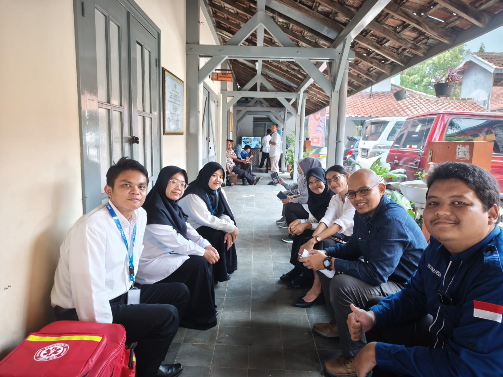
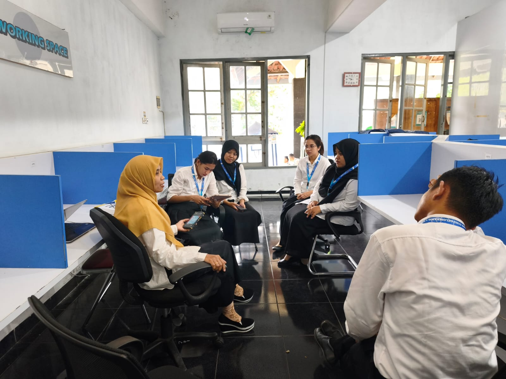
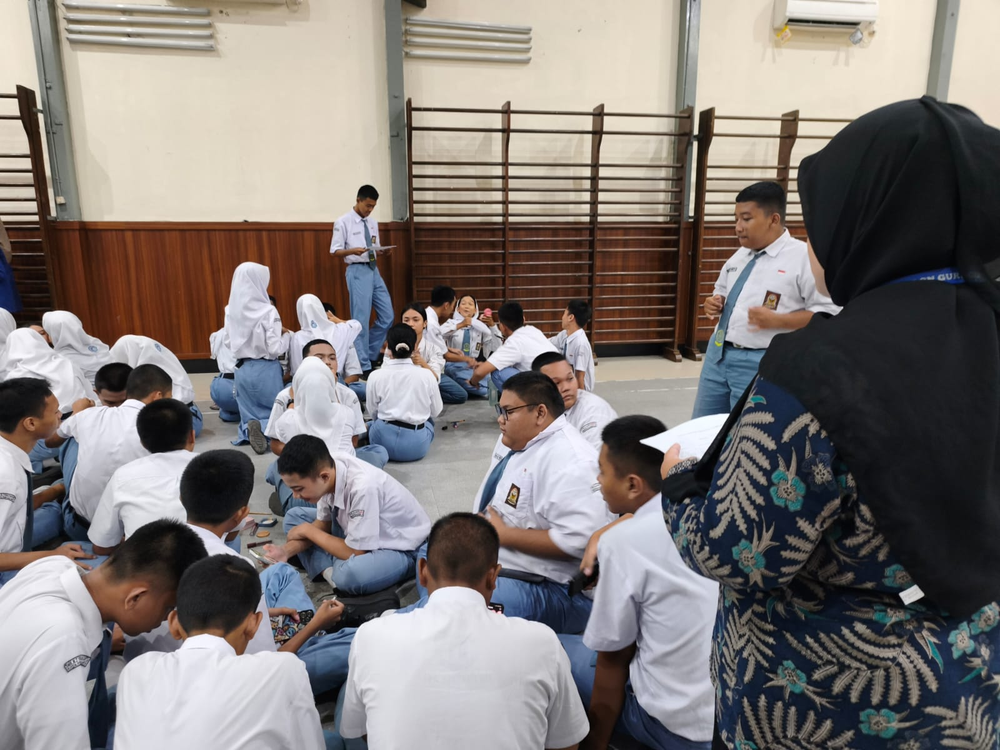
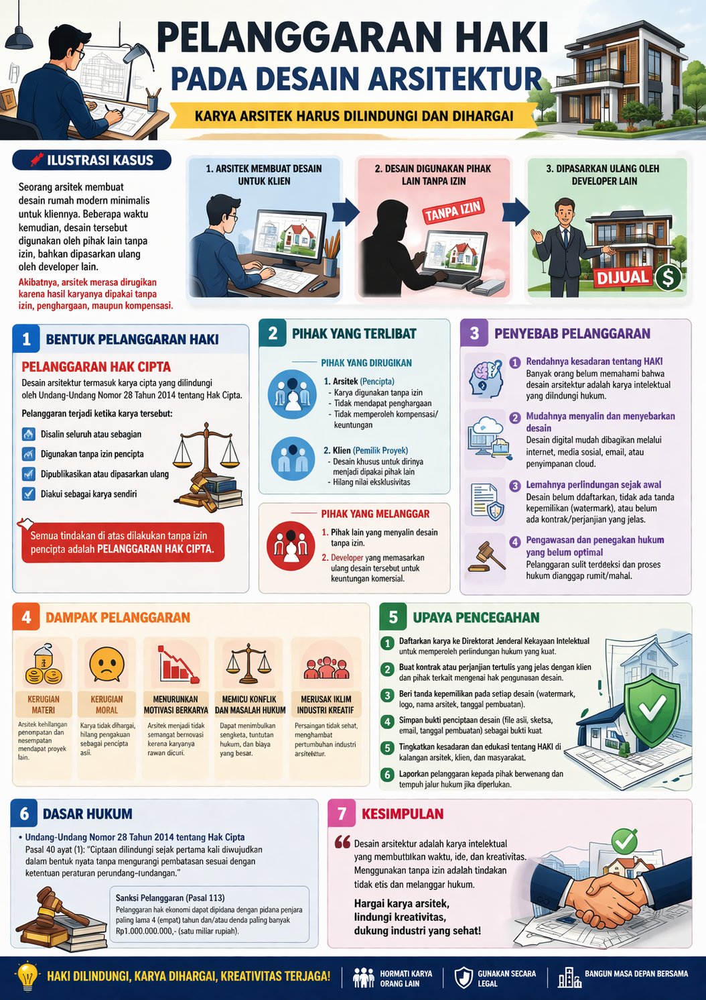
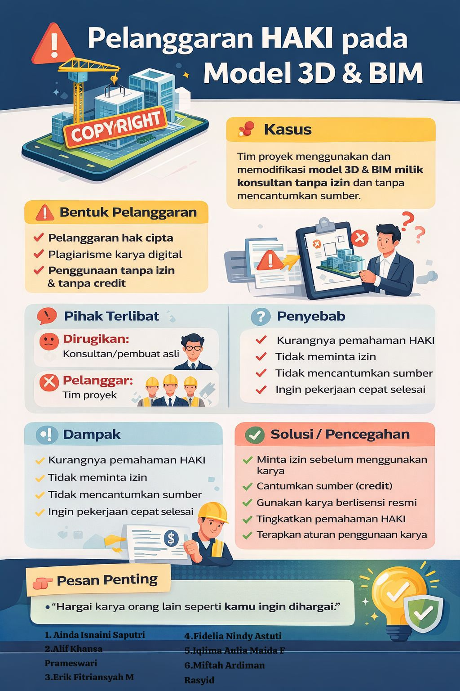

Jejak
Pengembangan Diri
Selamat datang di portofolio yang mendokumentasikan perjalanan, pengalaman, dan perkembangan saya selama praktik mengajar di SMK Negeri 2 Yogyakarta.
Dokumentasi Singkat Perjalanan Praktik




Kompetensi Pedagogik & Profesional
👤 Profil Mahasiswa

Singkawang, Kalimantan Barat
Saya Heniasi, lahir dan besar di Singkawang, kota yang dikenal dengan seribu kelenteng dan kerukunan antaretnis yang kuat. Keunikan daerah asal saya mengajarkan nilai toleransi, keterbukaan, dan semangat gotong royong—nilai‑nilai yang selalu saya bawa dalam setiap interaksi dengan siswa yang beragam.
Inspirasi menjadi guru hadir dari pengalaman melihat kesenjangan literasi digital di sekitar saya. Saya percaya bahwa pendidikan Informatika yang humanis mampu menjembatani mimpi anak‑anak, tidak hanya di kota besar tetapi juga di daerah pinggiran. Tujuan saya adalah menjadi guru profesional yang adaptif, menginspirasi siswa berpikir kritis, kreatif, dan tetap membumi pada nilai‑nilai kemanusiaan.
“Mendidik adalah menyalakan api, bukan mengisi wadah.”
— Socrates (dimodifikasi)
📚 Artefak Perangkat Pembelajaran
Modul Ajar / RPP & Analisis PPL Terbimbing
Siklus 1: Observasi & Adaptasi Pedagogik
Konteks
RPP Siklus 1 disusun pada tahap awal PPL Terbimbing. Fokus utama adalah mengimplementasikan hasil observasi karakteristik peserta didik untuk membangun rutinitas kelas dasar dan menguji instrumen asesmen diagnostik kognitif maupun non-kognitif.
Tujuan
Menciptakan lingkungan belajar yang kondusif (safe space), mengenalkan aturan kelas, serta memetakan tingkat pemahaman awal siswa agar perancangan pembelajaran selanjutnya lebih terarah.
Kelebihan
Pendekatan sangat terstruktur dengan instruksi yang jelas (Direct Instruction). Scaffolding diberikan secara penuh sehingga siswa yang kesulitan masih dapat mengikuti ritme pembelajaran.
Kekurangan
Pembelajaran belum sepenuhnya berdiferensiasi. Manajemen waktu saat transisi antar aktivitas kurang optimal karena penyesuaian awal dinamika kelas bersama guru pamong.
Analisis Kajian Teori (Integrasi PPL Terbimbing)
Praktik di Siklus 1 selaras dengan Teori Perkembangan Kognitif Vygotsky (Zone of Proximal Development/ZPD). Sebagai praktikan PPL, pemberian scaffolding penuh di fase awal ini diperlukan saat siswa menemui materi baru. Dalam kerangka PPL Terbimbing, siklus ini memvalidasi pentingnya asesmen awal (Understanding by Design) sebelum melangkah ke diferensiasi tingkat lanjut, di mana bimbingan dari Guru Pamong sangat ditekankan pada penguasaan kelas.
Siklus 2: Implementasi Pembelajaran Berdiferensiasi
Konteks
Berangkat dari refleksi Siklus 1, RPP ini memfokuskan pada pemenuhan kebutuhan belajar murid. Modul dirancang dengan menyediakan berbagai opsi sumber belajar (materi visual, audio, kinestetik) dan penugasan yang lebih fleksibel.
Tujuan
Mengakomodasi gaya belajar peserta didik yang heterogen untuk meningkatkan keterlibatan aktif dan motivasi intrinsik dalam pembelajaran melalui diferensiasi konten dan proses.
Kelebihan
Partisipasi dan antusiasme siswa meningkat tajam karena mereka difasilitasi sesuai gaya belajar masing-masing. Terjadi iklim pembelajaran yang inklusif dan tidak monoton.
Kekurangan
Persiapan materi ajar jauh lebih kompleks dan menyita waktu. Saat pelaksanaan, guru cukup kewalahan memantau kelompok kinestetik yang cenderung lebih aktif bergerak.
Analisis Kajian Teori (Integrasi PPL Terbimbing)
Desain RPP ini dilandasi oleh Teori Multiple Intelligences (Howard Gardner) dan Konsep Differentiated Instruction (Carol Ann Tomlinson). Dalam kerangka mata kuliah Pembelajaran Berdiferensiasi dan PPL, siklus ini menunjukkan transisi mahasiswa dari sekadar "mengajar kelas" menjadi "mengajar individu". Refleksi bersama Dosen Pembimbing Lapangan (DPL) menyoroti pentingnya keadilan (equity) dalam pendidikan, di mana setiap anak berhak mendapat perlakuan pedagogis yang tepat.
Siklus 3: Model PjBL Terintegrasi TPACK
Konteks
Pada fase puncak PPL ini, RPP dikembangkan menggunakan pendekatan Student-Centered Learning berbasis Proyek (PjBL) yang dipadukan dengan pemanfaatan media digital dan alat teknologi interaktif (TPACK).
Tujuan
Mendorong kemampuan berpikir tingkat tinggi (HOTS), kolaborasi kelompok, memecahkan masalah kontekstual, dan melatih kemandirian peserta didik dalam menghasilkan produk karya nyata.
Kelebihan
Siswa sangat aktif berkolaborasi dan mengembangkan kreativitas. Penggunaan teknologi media interaktif membuat materi abstrak lebih mudah dipahami dan sangat relevan dengan zaman.
Kekurangan
Membutuhkan alokasi waktu ekstensi karena fase pengerjaan proyek sulit diselesaikan dalam satu pertemuan. Terkadang dinamika kelompok memunculkan masalah free-rider jika tidak dipantau ketat.
Analisis Kajian Teori (Integrasi PPL Terbimbing)
Desain ini mencerminkan puncak capaian PPL yaitu penguasaan Konstruktivisme Sosial dan kerangka TPACK (Technological Pedagogical Content Knowledge). Praktikan membuktikan kemampuannya meramu pemahaman konten (materi), kemampuan pedagogi (PjBL), dan pemanfaatan teknologi secara bersamaan. Evaluasi PPL Terbimbing di fase ini menunjukkan keberhasilan perpindahan paradigma dari Teacher-Centered (Siklus 1) menjadi Student-Centered Learning.
Media Pembelajaran
Berikut merupakan artefak media ajar berbasis teknologi informasi yang dikembangkan untuk mendukung penyampaian materi secara visual, kontekstual, dan interaktif pada tiap siklus bimbingan PPL.
🧑🎓 Ruang Karya Praktik Murid
Hasil proyek literasi digital dalam bentuk poster dan video edukasi. Klik pada kartu untuk menonton/melihat detail karya.
📢 Poster Karya Siswa

⏰ Poster Karya Siswa

📸 Dokumentasi Pembelajaran


📋 Lampiran 7 – Penilaian Penyusunan Perangkat Pembelajaran
Penilaian 1 (RPP Siklus I)
Penilaian 2 (RPP Siklus II)
Penilaian 3 (RPP Siklus III)
🍎 Lampiran 8 – Penilaian Praktik Mengajar
Siklus I
Siklus II
Siklus III
🌟 Model Guru Profesional yang Dituju
Misi Utama
Menjadi pendidik yang menghidupkan ruang kelas inklusif, mendorong setiap siswa berpikir kritis, dan membangun karakter melalui pembelajaran Informatika yang kontekstual dan humanis.
Kompetensi yang Dibangun
- Menguasai strategi pembelajaran berdiferensiasi konten, proses, dan produk.
- Mampu mengintegrasikan teknologi secara pedagogis (TPACK).
- Terampil melakukan asesmen formatif dan reflektif.
- Memiliki keterampilan komunikasi empatik dengan siswa dan kolega.
Karakter Guru Ideal
Sabar, adaptif, rendah hati, selalu belajar, dan menjunjung tinggi nilai‑nilai “Ngajeni lan Ngopeni” (menghargai dan merawat). Guru bukan hanya sumber ilmu, tetapi juga teladan dan sahabat bagi siswa.
“Guru yang baik mengajar; guru yang hebat menginspirasi.”
— William Arthur Ward
Refleksi Akhir PPL Terbimbing & Filosofi Mengajar
“Merangkai makna, menumbuhkan nilai, menjadi guru yang merdeka.”
📖 Refleksi Akhir Praktik Pengalaman Lapangan Terbimbing
Selama mengikuti PPL Terbimbing, saya belajar bahwa menjadi guru tidak hanya tentang menguasai materi, tetapi juga tentang memahami peserta didik, menciptakan pengalaman belajar yang bermakna, serta terus melakukan refleksi terhadap setiap proses pembelajaran. Dari tahap observasi hingga praktik mengajar, saya memperoleh banyak pengalaman yang membantu saya memahami tantangan dan dinamika dunia pendidikan secara lebih nyata.
Salah satu tantangan yang saya hadapi adalah bagaimana melibatkan seluruh peserta didik agar aktif dalam pembelajaran. Setiap kelas memiliki karakteristik yang berbeda, sehingga saya perlu menyesuaikan strategi, media, dan pendekatan yang digunakan. Dari pengalaman tersebut, saya belajar bahwa fleksibilitas, komunikasi, dan kesiapan untuk terus belajar merupakan kemampuan yang penting bagi seorang guru.
Berbagai masukan dari guru pamong dan dosen pembimbing menjadi bekal berharga bagi saya untuk terus berkembang. Pengalaman selama PPL Terbimbing mengajarkan bahwa proses menjadi guru adalah perjalanan belajar yang tidak pernah berhenti. Setiap tantangan, keberhasilan, dan refleksi merupakan bagian dari langkah kecil menuju pendidik yang lebih baik.
🌱 Filosofi Mengajar
Saya percaya bahwa setiap peserta didik memiliki potensi untuk berkembang ketika diberikan kesempatan, dukungan, dan lingkungan belajar yang tepat. Oleh karena itu, pembelajaran tidak seharusnya hanya berfokus pada penyampaian materi, tetapi juga pada proses membantu peserta didik menemukan cara terbaik untuk belajar dan bertumbuh.
Dalam praktik mengajar, saya berusaha menciptakan pembelajaran yang bermakna, relevan, dan melibatkan peserta didik secara aktif. Saya meyakini bahwa pengetahuan tidak sekadar diberikan oleh guru, melainkan dibangun melalui pengalaman, diskusi, eksplorasi, dan refleksi. Pandangan ini sejalan dengan pendekatan konstruktivisme yang menempatkan peserta didik sebagai subjek utama dalam proses belajar.
Bagi saya, menjadi guru berarti menjadi pembelajar sepanjang hayat. Setiap kelas, setiap peserta didik, dan setiap pengalaman mengajar selalu menghadirkan pelajaran baru. Karena itu, saya berkomitmen untuk terus belajar, menerima umpan balik, dan mengembangkan diri agar dapat memberikan pengalaman belajar yang lebih baik bagi peserta didik di masa depan.